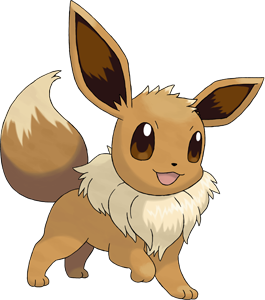

Curiosidades sobre a Eevee

Você sabia que a Eevee esconde muitos segredos? Confira as curiosidades mais interessantes!
Curiosidades Gerais
Fatos sobre a criação e o nome da Eevee.
- Eevee quase foi o mascote principal da franquia no lugar de Pikachu
- Seu nome vem da pronúncia da letra "E" de evolution
- É o único Pokémon com 8 evoluções diferentes
- Todas as Eeveelutions têm exatamente 525 de total base de estatísticas
- Eevee foi o primeiro Pokémon a ter mais de 3 evoluções
- No Japão o nome original é Eievui (イーブイ)
Curiosidades do Pokémon GO
Renomeie a Eevee antes de evoluir para controlar a evolução.
-
Rainer
Vaporeon
-
Sparky
Jolteon
-
Pyro
Flareon
-
Sakura
Espeon
-
Tamao
Umbreon
-
Linnea
Leafeon
-
Rea
Glaceon
-
Kira
Sylveon
Curiosidades do Anime
Aparições marcantes da Eevee na televisão.
- Eevee aparece no episódio 40 com um treinador chamado Sandy
- A Eevee do Sandy não queria evoluir — e o episódio respeita isso
- Serena, personagem da série XY, teve uma Eevee que evoluiu para Sylveon
- Gary Oak, rival do Ash, possui uma Umbreon na série Johto
Glossário
Termos que aparecem nesta página.
- Eeveelution
- Nome criado pelos fãs para se referir às evoluções de Eevee.
- DNA Instável
- Característica fictícia de Eevee que explica suas múltiplas evoluções.
- Total Base
- Soma de todas as estatísticas de um Pokémon. Todas as Eeveelutions têm 525.